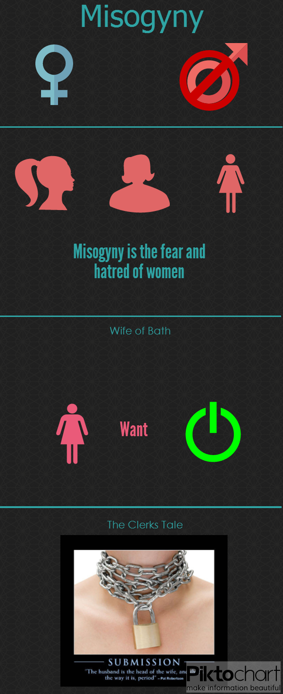

Misogyny
Then and Now

Take our survey and help assess how widespread misogyny is today
here
Return to Top
The Clerk's Tale
Misogyny: Then and Now
The Wife's Tale
The Ideal Woman: Then and Now
Traits of a Fairytale
Treatement of Women: Then and Now